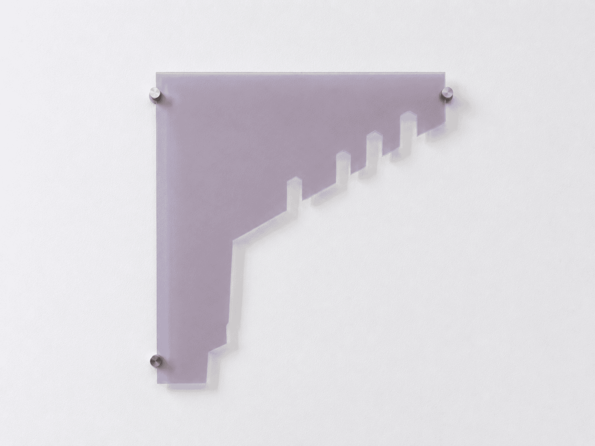
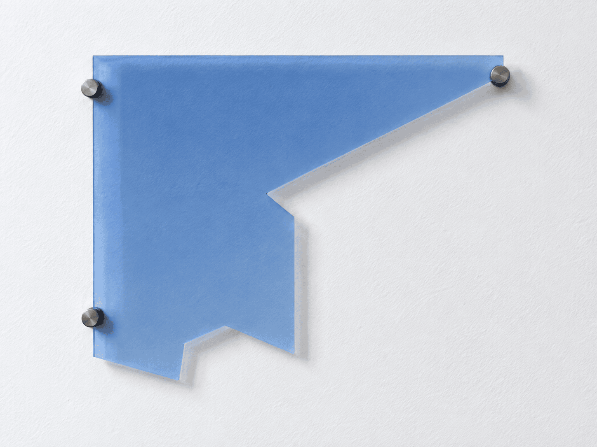
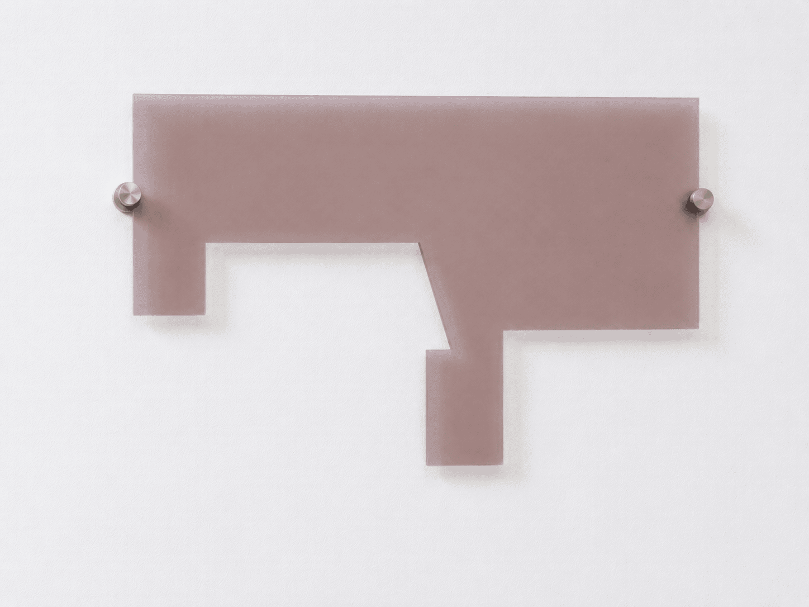

Concrete Forest
- serie di installazioni
- fotografia digitale su plexiglas tagliato a laser
- 55 × 59 × 0,3 cm; 55 × 40 × 0,3 cm; 55 × 36 × 0,3 cm
Concrete Forest nasce da un confronto personale con la presenza soffocante della città di Milano, dove la vastità del paesaggio urbano si trasforma in una gabbia e lo spazio sembra non offrire alcuna possibilità di fuga.
I confini della città sembrano estendersi all’infinito, non solo orizzontalmente ma anche verso l’alto: grattacieli e cavi elettrici frammentano il cielo, compromettendo l’idea di uno spazio aperto e trasformandolo in un ulteriore limite.
Il lavoro funge da escamotage : un tentativo di immaginare una via di fuga dal labirinto urbano che mi circonda.



